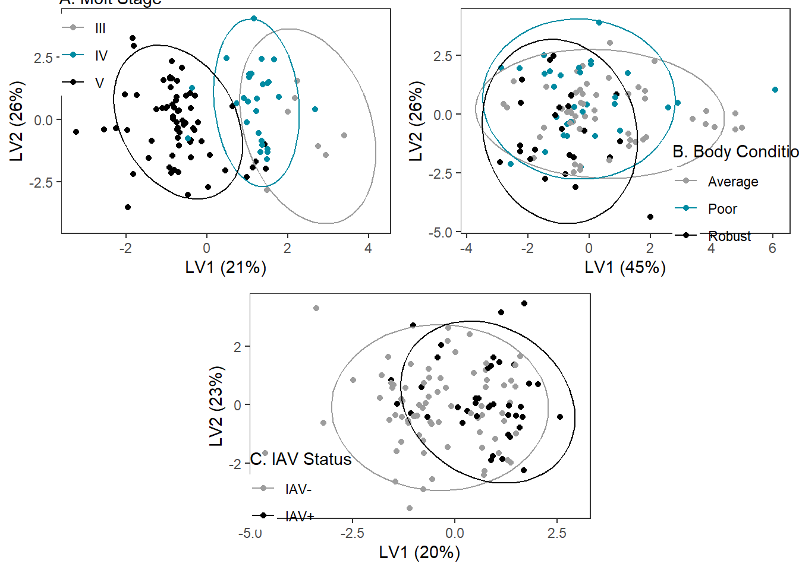

Molt Stage
molt_plsda <-
mixOmics::plsda(data_molt[,2:10],
data_molt$molt.stage,
scale=TRUE)
molt_plsda_data <-
data.frame(x = molt_plsda$variates$X[,1],
y = molt_plsda$variates$X[,2],
molt.stage = molt_plsda$Y)
# Set x and y axis labels based on prop of variation explained
labelx_molt <- paste("LV1 (",
round(abs(molt_plsda$prop_expl_var$X[1]*100), digits=0),
"%)",
sep="")
labely_molt <- paste("LV2 (",
round(abs(molt_plsda$prop_expl_var$X[2]*100), digits=0),
"%)",
sep="")
molt_plsda_ggplot <-
ggplot(molt_plsda_data,
aes(x=x, y=y, col=molt.stage)) +
geom_point() +
stat_ellipse() +
labs(x=labelx_molt,
y =labely_molt) +
scale_color_manual("A. Molt Stage",
values=c("#9d9d9d","#008ba2", "black")) +
theme_bw() +
theme(panel.grid=element_blank(),
legend.position = "inside",
legend.position.inside = c(0.15, 0.85),
legend.background = element_rect(fill=NA))
Body Condition
bc_plsda <-
mixOmics::plsda(data_bc[,2:10],
data_bc$bc_bin,
scale=TRUE)
bc_plsda_data <-
data.frame(x = bc_plsda$variates$X[,1],
y = bc_plsda$variates$X[,2],
bc = bc_plsda$Y)
# Set x and y axis labels based on prop of variation explained
labelx_bc <- paste("LV1 (",
round(abs(bc_plsda$prop_expl_var$X[1]*100), digits=0),
"%)",
sep="")
labely_bc <- paste("LV2 (",
round(abs(bc_plsda$prop_expl_var$X[2]*100), digits=0),
"%)",
sep="")
bc_plsda_ggplot <-
ggplot(bc_plsda_data,
aes(x=x, y=y, col=bc)) +
geom_point() +
stat_ellipse() +
labs(x=labelx_bc,
y = labely_bc) +
scale_color_manual("B. Body Condition",
values=c("#9d9d9d","#008ba2", "black")) +
theme_bw() +
theme(panel.grid=element_blank(),
legend.position = "inside",
legend.position.inside = c(0.85, 0.17),
legend.background = element_rect(fill=NA))
IAV
iav_plsda <-
mixOmics::plsda(data_iav[,2:10],
data_iav$iav,
scale=TRUE)
iav_plsda_data <-
data.frame(x = iav_plsda$variates$X[,1],
y = iav_plsda$variates$X[,2],
iav = iav_plsda$Y)
# Set x and y axis labels based on prop of variation explained
labelx_iav <- paste("LV1 (",
round(abs(iav_plsda$prop_expl_var$X[1]*100), digits=0),
"%)",
sep="")
labely_iav <- paste("LV2 (",
round(abs(iav_plsda$prop_expl_var$X[2]*100), digits=0),
"%)",
sep="")
iav_plsda_ggplot <-
ggplot(iav_plsda_data,
aes(x=x, y=y, col=iav)) +
geom_point() +
stat_ellipse() +
labs(x=labelx_iav,
y =labely_iav) +
scale_color_manual("C. IAV Status",
values=c("#9d9d9d", "black")) +
theme_bw() +
theme(panel.grid=element_blank(),
legend.position = "inside",
legend.position.inside = c(0.15, 0.13),
legend.background = element_rect(fill=NA))
Combine all plots
plsda_plots <- grid.arrange(molt_plsda_ggplot, bc_plsda_ggplot, iav_plsda_ggplot,
ncol=2, nrow=2,
layout_matrix=(rbind(c(1,1,2,2), c(NA,3,3,NA))))

ggsave("Figures/plsda_manuscript.jpeg", plsda_plots, width=10, height=8, units="in")